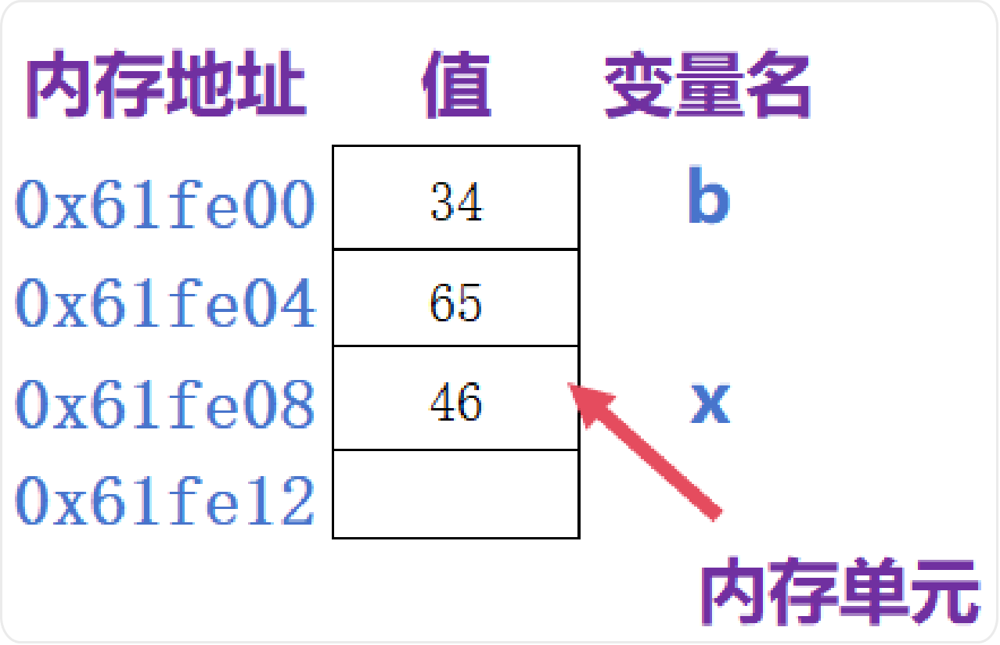
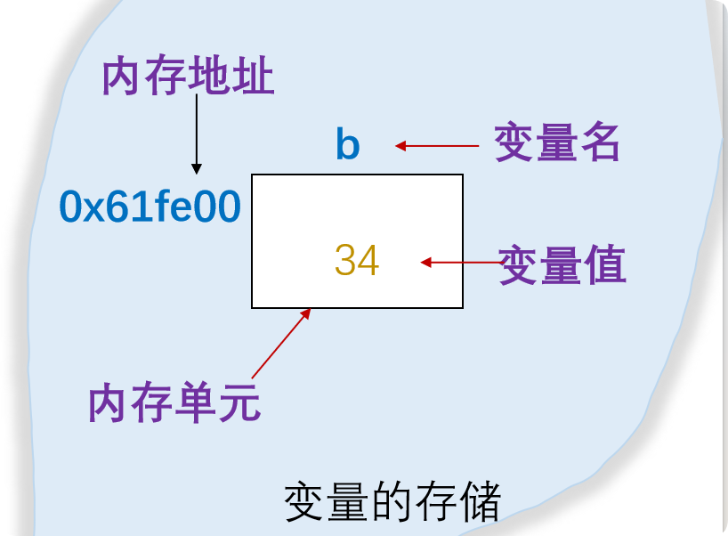
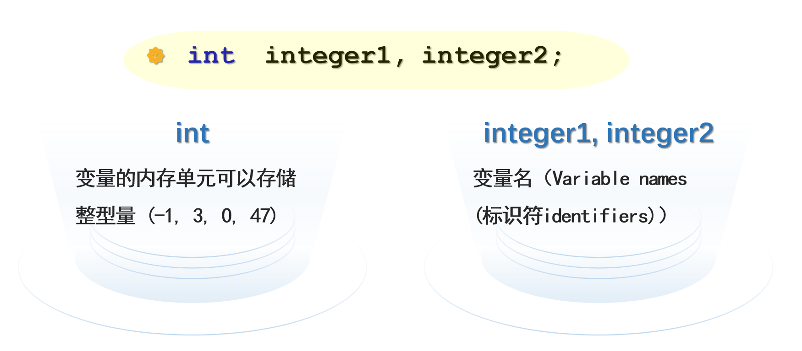
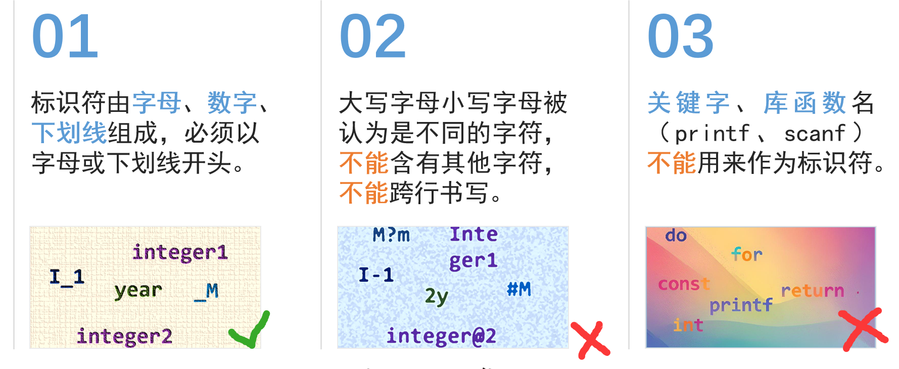

2.1 常量（Constant）
定义
常量的值是在编译时（COMPILE time）给定的，程序运行过程中不能被改变。
The value of a constant is given at COMPILE time, and (of course) cannot be changed.
The value of a constant is given at COMPILE time, and (of course) cannot be changed.
2.1.1 常量的分类
C 语言中的常量有：整型常量、实型常量、字符型常量、字符串常量、符号常量、枚举常量等。
（1）隐式声明
隐式声明
基本类型常量通过书写形式隐式说明的，即由其书写格式确定数据的类型。
（2）各类常量的书写形式
| 常量类型 | 书写形式 | 示例 |
|---|---|---|
| 整型量 | 十进制整数 | 3、55 |
| 八进制整数（以 0 开头） | 015 |
|
| 十六进制整数（以 0x 开头） | 0x0D |
|
| 实型量 | 小数形式 | -16.783 |
| 指数形式 | 3.4e-5 |
|
| 字符常量 | 字符形式 | 'A'、'$'、'9'、'p' |
| 转义字符形式 | '\n'、'\101' |
|
| 字符串常量 | 用双引号括起来的一串字符 | "Welcome to Room 2-202" |
| 符号常量 | 用 #define 定义 |
#define PI 3.1415926 |
例 2-1 输入年份，显示问好
要求：编写程序，输入年份，显示问好。例如输入 2018，显示"你好,2018"。
❌ 错误写法：把变量名写在双引号里面
#include<stdio.h> int main() { int year; scanf("%d", &year); printf("你好, year"); // 错误：year 只是一串普通字符 return 0; }
运行结果：
2020
你好, year
✅ 正确写法：使用占位符 %d
#include<stdio.h> int main() { int year; scanf("%d", &year); printf("你好,%d", year); // %d 是占位符，year 是要输出的结果 return 0; }
运行结果：
2022
你好,2022
2004
你好,2004
要点
scanf("%d", &year);中的&是取地址符，不能省略。printf("你好, %d", year);中的%d是占位符，year是要输出的结果，二者一一对应。
2.2 变量（Variable）
定义
变量是在程序运行过程中，其值可以被改变的量。
程序运行时，系统为每一个变量分配一个内存单元，并在变量名和该内存单元地址间建立一一对应的关系。
程序运行时，系统为每一个变量分配一个内存单元，并在变量名和该内存单元地址间建立一一对应的关系。

引用变量名，实际上就是引用该变量名所对应地址单元的内容。
2.2.1 什么是变量
变量也应有不同的类型。
- 常量的类型是隐式说明的，即通过书写形式确定。
- 变量的类型则是显式说明的，通过定义语句确定变量名及其类型。

注意
变量名及其类型需要先定义，后使用。
例 2-2 两数求和程序（分步输入版）
1. /* Fig. 2.1_1: Addition program */ 2. #include <stdio.h> 3. int main( void ) { 4. int integer1; 5. int integer2; 6. scanf("%d", &integer1); 7. scanf("%d", &integer2); 8. printf("Sum is %d\n", integer1 + integer2 ); 9. return 0; 10. }
例 2-3 两数求和程序（带提示版）
1. /* Fig. 2.1_2: Addition program */ 2. #include <stdio.h> 3. int main(void) { 4. int integer1; 5. int integer2; 6. printf("Enter first integer\n"); /* 提示 */ 7. scanf("%d", &integer1); 8. printf("Enter second integer\n"); // 提示 9. scanf("%d", &integer2); // 读入（输入）另一个整数 10. printf("Sum is %d\n", integer1 + integer2); // 输出结果 11. return 0; // 说明程序正常结束，返回操作系统 12. } /* 主函数结束 */
例 2-4 两数求和程序（一次输入两个数）
1. /* Fig. 2.1_3: Addition program */ 2. #include <stdio.h> 3. int main( void ) 4. { 5. int integer1, integer2 ; 6. printf("Enter two integers, separate with ','\n"); // prompt（提示） 7. scanf("%d,%d", &integer1, &integer2); /* read two integers */ 8. printf("Sum is %d\n", integer1 + integer2 ); /* print sum */ 9. return 0; 10. }
2.2.2 变量的定义
变量定义的格式
类型定义符 变量名表；
示例：
int student_num ; float student_score, aver;
- 类型定义符：定义变量名表中所列变量的类型（如
int、float、double）。 - 变量名表：由若干个变量名组成，其间用逗号
,分隔。 - 变量名示例：
M、integer1、integer2、year。

C 语言基本类型一览表
| 类型 | 类型定义符 | 长度（字节数） | 有效值范围 |
|---|---|---|---|
| 字符型 | char | 1 | 有符号数：-128 ~ 127，-27 ~ (27-1) |
| 有符号字符型 | signed char | 1 | 有符号数：-128 ~ 127，-27 ~ (27-1) |
| 无符号字符型 | unsigned char | 1 | 无符号数：0 ~ 255，0 ~ (28-1) |
| 短整型 | short int 或 short | 2 | 有符号数：-32768 ~ 32767，-215 ~ (215-1) |
| 有符号短整型 | signed short int 或 signed short | 2 | 有符号数：-32768 ~ 32767，-215 ~ (215-1) |
| 无符号短整型 | unsigned short int | 2 | 无符号数：0 ~ 65535，0 ~ (216-1) |
| 整型 | int | 4 | 有符号数：约 -21 亿 ~ 21 亿，-231 ~ (231-1) |
| 有符号整型 | signed int | 4 | 有符号数：约 -21 亿 ~ 21 亿，-231 ~ (231-1) |
| 无符号整型 | unsigned int 或 unsigned | 4 | 无符号数：约 0 ~ 42 亿，0 ~ (232-1) |
| 长整型 | long int 或 long | 4 | 有符号数：约 -21 亿 ~ 21 亿，-231 ~ (231-1) |
| 有符号长整型 | signed long int 或 signed long | 4 | 有符号数：约 -21 亿 ~ 21 亿，-231 ~ (231-1) |
| 无符号长整型 | unsigned long int 或 unsigned long | 4 | 无符号数：约 0 ~ 42 亿，0 ~ (232-1) |
| 单精度实型 | float | 4 | 约 3.4×10-38 ~ 3.4×1038（7 位有效位） |
| 双精度实型 | double | 8 | 约 1.7×10-37 ~ 1.7×1038（16 位有效位） |
| 长双精度实型 | long double | 10 | 约 10-4031 ~ 104032（18 位有效位） |
要点
在程序执行时，系统为已经定义的不同类型的各个变量逐一分配存储单元。
- 每个单元存储一个数据；
- 单元的大小依据数据类型可能不一样。
2.2.3 变量的初始化
定义的同时对变量进行初始化（赋初值）
类型定义符 变量名 = 表达式, ......;
示例：
long distance = 700000, height; double area = 9.6e7; float s = 3 * distance;
=是赋值号，不是数学中的等号。distance需要预先定义，且已经赋过初值，才能用于计算s的初值。
2.2.4 使用变量的注意事项
四个注意
- 在使用变量时，应注意"先定义，后使用"的原则。
- 在一个函数中，变量名不能重复定义。
- 除非有特定的需要，通常把定义变量的语句集中放在函数的开始处。
- 通常，在函数中定义变量时，若没有赋初值，则该变量的值不确定。
2.3 标识符和关键字
在 C 语言程序中，标识符和关键字都属于程序的基本语法单位。
2.3.1 关键字（Keywords）
定义
关键字是 C 语言中明确的保留字，它们有特定的含义，不能用作其他用途。
auto | break | case | char | const | continue | default | do |
double | else | enum | extern | float | for | goto | if |
int | long | register | return | short | signed | sizeof | static |
struct | switch | typedef | union | unsigned | void | volatile | while |
2.3.2 标识符（Identifiers）
标识符的命名规则
- 标识符由字母、数字、下划线组成，必须以字母或下划线开头。
- 大写字母和小写字母被认为是不同的字符，不能含有其他字符，不能跨行书写。
- 关键字、库函数名（
printf、scanf）不能用来作为标识符。

标识符说明
- Visual C++ 中标识符有效长度可达 255 个字符。
- 良好的命名习惯会让程序的可读性、可维护性大大加强（如
student_name、birthday、age、year）。 main是个特殊的标识符。名为main的函数是执行程序的入口。
2.4 输入输出函数
2.4.1 scanf 函数（输入函数）
scanf 函数
功能：程序运行时，从用户处获取值。
scanf使用标准输入设备（通常指键盘）。- 程序运行时，用户从键盘键入数据，并按下 Enter 键响应
scanf语句。 - 不按下 "Enter" 键，程序不会向下继续运行。
（1）scanf 的格式
scanf("格式控制字符串", 地址列表);
scanf("%d,%d", &integer1, &integer2);
scanf("%d:%d", &hour, &minute);
- 格式控制字符串：包含格式字符和普通字符。
- 逗号、冒号等参数分隔符是不可替换的，输入时必须按原样输入。
- 地址列表：数据输入的地址，需要在变量名前加
&（取地址符）。 - 数据输入分隔符：按要求设置。
（2）scanf 的常用格式字符
| 格式字符 | 说明 |
|---|---|
%d | 输入十进制整数 |
%u | 输入无符号整数 |
%o | 输入八进制整数（非负数） |
%x | 输入十六进制整数（非负数） |
%f、%e | 输入实型数据，可以任意选用小数形式或指数形式（f、e 功能等价）；double 类型数据使用 %lf |
%c | 输入单个字符 |
%s | 输入字符串（字符串数组中） |
注意
不到万不得已，输入中不建议使用辅助格式符！
scanf("%02d", &a); scanf("%.1f", &x);
例 2-5 两数求和（scanf 提示字符写在格式串中）
1. /* Fig. 2.1_2: Addition program */ 2. #include <stdio.h> 3. int main( void ) { 4. int integer1, integer2 ; 5. 6. scanf("integer1=%d", &integer1); 7. scanf("integer2=%d", &integer2); 8. 9. printf("Sum is %d\n", integer1 + integer2 ); 10. return 0; 11. }
运行时输入：
integer1=12
integer2=34
Sum is 46
说明
scanf 中的普通字符（如 integer1=）必须原样输入，否则无法正确读入数据。
2.4.2 printf 函数（输出函数）
printf 函数
格式：
printf("格式控制字符串", 输出列表);
- 双引号内：格式字串，包括普通字符、格式字符。
- 双引号外：输出列表，输出项与格式对应。
printf函数可以在第二部分参数中进行计算。
printf("Sum is %d\n", integer1 + integer2 );
第一部分参数：
%d - 输出（显示）十进制整数
Sum is(\n) - 普通字符（转义字符），通常提示显示的数据意义（非必须，按要求添加）
第二部分参数：
integer1 + integer2 - 被输出的表达式
（1）printf 的常用格式字符
| 类型 | 格式字符串 | 输出形式 |
|---|---|---|
| 整型 | %d |
带符号的十进制形式（正数不输出符号 +） |
%o |
无符号的八进制形式（不输出前导符号 0） | |
%x 或 %X |
无符号的十六进制形式（不输出前导符号 0x 或 0X） | |
%u |
无符号的十进制形式 | |
| 实型 | %f |
小数形式，默认小数位数为 6 位 |
%e 或 %E |
指数形式，数字部分默认为 6 位 | |
%g 或 %G |
优化的小数或指数形式（去掉无意义的 0 后所占宽度较少的一种） | |
| 字符型 | %c |
单个字符形式（不输出单引号 '） |
%s |
字符串 |
（2）printf 的辅助格式字符
| 字符 | 功能 | 示例 |
|---|---|---|
| m | 输出数据域宽，数据长度 < m，左补空格，否则按实际输出 | %8d |
| .n | 对实数，指定小数点后位数（四舍五入） | printf("%8.2f", 123.4567); %.3f |
| - | 对字符串，指定实际输出位数；输出数据在域内左对齐（缺省右对齐） | %.6s %-8d |
| + | 指定在有符号数的正数前显示正号（+） | %+8d |
| 0 | 输出数值时指定左面不使用的空位置自动填 0 | printf("%08.0f", 123.4567); %08d |
| # | 在八进制和十六进制数前显示前导 0、0x | printf("%#x", 65); %#o %#x |
| l / L | 在 d,o,x,u 前，指定输出精度为 long 型；在 e,f,g 前，指定输出精度为 double 型 | %ld %lf |
printf("f(%d,%d)=%f", 3, 4, 5.0);
printf("a = %d \n b = %8.2f \n", a, b+5.5);
2.4.3 字符输入输出
（1）字符常量与字符串常量
- 字符常量：用单引号括起来的一个字符。
- 字符串常量：用双引号括起来的一串字符，以
'\0'结尾。 - 字符变量：以变量名代表的一个字符。
（2）字符的格式输入输出
scanf("%c", &ch); // 输入单个字符
printf("%c", ch); // 输出单个字符
注意
在用
%c 格式输入时，空格等间隔字符也都作为有效字符输入。
例 2-6 字符的格式输入输出
1. /* Fig. 2.2_1: print character */ 2. #include <stdio.h> 3. int main( void ) { 4. char ch1, ch2, ch3; 5. scanf( "%c%c%c", &ch1, &ch2, &ch3 ); 6. printf( "ch1:%c, ch2:%c, ch3:%c\n", ch1, ch2, ch3 ); 7. return 0; 8. }
（3）无格式输入输出——输入、输出单个字符
getchar()：字符输入函数。putchar()：字符输出函数。getchar()和putchar()原型在头文件<stdio.h>中。
ch = getchar(); // 等价于 scanf("%c", &ch);
putchar(ch); // 等价于 printf("%c", ch);
getchar() 的使用
char ch; ch = getchar(); // 从终端输入 1 个字符并赋给 ch char ch; getchar(); // 输入 1 个字符，但没有赋值给任何一个变量
putchar() 的使用
putchar() 函数将参数的值送至屏幕，参数可以是 char 型变量、常量或表达式，或 0~255 间的整型数据。
#include <stdio.h> int main( void ){ putchar(65); // 输出字符 'A' putchar('A'); // 输出字符 'A' putchar('a'-32); // 输出字符 'A' return 0; }
（4）字符串格式输出
printf("welcome to c!! \n");
printf("%s", "welcome to c!! \n");
上述两种写法输出结果相同。%s 是字符串格式字符。
2.5 讨论
讨论题
- 输入或输出时，格式与输出量不匹配时，结果如何？例如：
%d输入或输出实型量%f输入或输出整型量%c输入或输出整型量 123456
- 输入时，若分隔符不一致，结果如何？
- 输入时，若增加提示字符，又如何？
结论提示
- 格式字符与数据类型不匹配时，会导致输出结果错误或程序异常。
- 输入时，格式串中的普通字符必须原样输入，否则数据无法正确读入。
- 建议在
scanf前用printf给出提示信息，而不是把提示字符写在scanf的格式串中。
综合例题
例 2-7 计算两个整数的和
要求：从键盘输入两个整数，输出它们的和。
#include <stdio.h> int main( void ) { int integer1, integer2; printf("Enter two integers: "); scanf("%d %d", &integer1, &integer2); printf("Sum is %d\n", integer1 + integer2); return 0; }
运行示例：
Enter two integers: 12 34
Sum is 46
例 2-8 计算两个实数的和（使用 double 类型）
要求：输入两个实数，输出它们的和。
#include <stdio.h> int main( void ) { double x, y; scanf("%lf %lf", &x, &y); printf("Sum is %f\n", x + y); return 0; }
注意
double 类型数据在 scanf 中使用 %lf，在 printf 中使用 %f。
例 2-9 字符的输入输出
要求：输入一个字符，输出它的 ASCII 码值。
#include <stdio.h> int main( void ) { char ch; ch = getchar(); printf("The ASCII code of %c is %d\n", ch, ch); return 0; }
运行示例：
输入：A
输出：The ASCII code of A is 65
本章小结
↑ 返回顶部
- 掌握常量的概念、分类及其书写形式（整型、实型、字符型、字符串、符号常量）。
- 掌握变量的概念、定义格式、初始化方法及使用注意事项。
- 掌握 C 语言的基本数据类型（char、int、float、double 等）及其长度和取值范围。
- 掌握标识符的命名规则，了解关键字和标识符的区别。
- 掌握
scanf和printf的格式控制字符串、常用格式字符及辅助格式字符。 - 掌握字符输入输出函数
getchar()和putchar()的使用方法。